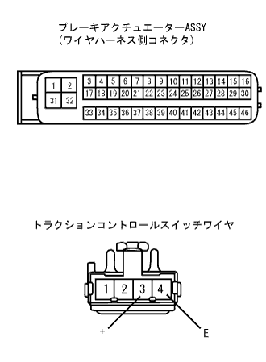

ABS & TRC & VSC & BA System TRC OFF indicator lamp system |
| Step 1 | VSC Warning Grand Point Inspection |
Confirm that the VSC Warning Lamp is off.
|
| ||||
| OK | |
| Step 2 | Traction control switch single inspection |
Take off the traction control switch.
Use SST (Toyota Electrical Tester) to check the conversation between 3 (+) ← → 4 (E) terminals when operating the switch.
|
| ||||
| OK | |
| Step 3 | Wire harness inspection |
Cut the connector of the brake actuator asser ASSY.
 |
Use SST (Toyota Electrical Tester) to inspect the 35 (WT) terminal and body ground voltage of brake actuator wire.
|
| ||||
| OK | |
| Step 4 | Wire harness inspection |
 |
Use SST (Toyota Electrical Tester) to check the voltage of the 3 (+) terminal of the traction control switch wire.
Inspect the conjunction between the 4 (E) terminal and the body earth of the wire of the traction control switch.
| A | +Bad terminal voltage |
| B | E -terminal conduction poor |
|
| ||||
| A | |
| Step 5 | Wire harness inspection |
In the IG switch off, cut the brake actuator asser and traction control switch connectors.
|  |
Use SST (Toyota Electrical Tester) to check the 3 (+) terminal of the brake actuator wire 43 (CSW) ← → traction control switch 3 (+) terminals.
|
| ||||
| OK | |
| Step 6 | Wire harness inspection |
In the IG switch off, separate the brake actuator asser ASSY and the combination meter connector.
Use SST (Toyota Electrical Tester) to inspect the conduction of wire harness between terminals between terminals between 35 (WT) terminals ← → combination meters of the brake actuator asser Asset Asset Assemor ASSY.(Meter terminal array)
|
| ||||
| OK | ||
| ||